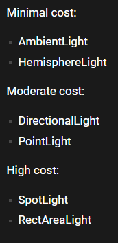

most of them follows the format off
const light = new THREE.{LightType}({color}, {intensity});ThreeJS uses a cubemap texture. use this website to convert textures to the correct for mat
then import it by
import { CubeTextureLoader } from 'three';
const environmentMap = cubeTextureLoader.load([
'/assets/hdri/px.png',
'/assets/hdri/nx.png',
'/assets/hdri/py.png',
'/assets/hdri/ny.png',
'/assets/hdri/pz.png',
'/assets/hdri/nz.png'
])You can set a global environmap by setting it as the scene's environment
scene.environment = environmentmap;You can also set it per object to optimise performance. By setting it onto devices that need it
meshObject.material.envMap = environmentMap;By default you can't change lighting intensity of an hdri but you can brighten up the whole image by tone mapping

// create fog with colour and and near and far planes
const fog = new THREE.Fog('#262837', 1, 15)
// add to scene
scene.fog = fog
// change renderer background colour
renderer.setClearColor('#262837')You can add light helpers to see where they are. Just making them visible for debug
const hemisphereLightHelper = new THREE.HemisphereLightHelper(hemisphereLight, 0.2)
scene.add(hemisphereLightHelper)
const directionalLightHelper = new THREE.DirectionalLightHelper(directionalLight, 0.2)
scene.add(directionalLightHelper)
const pointLightHelper = new THREE.PointLightHelper(pointLight, 0.2)
scene.add(pointLightHelper)